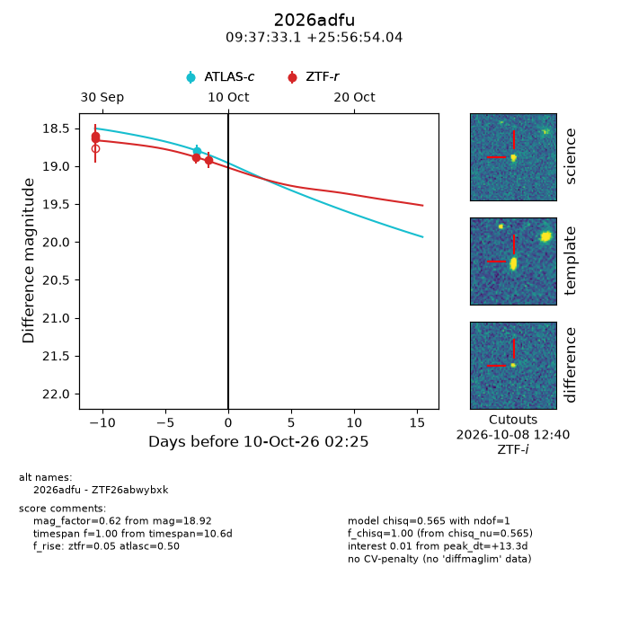
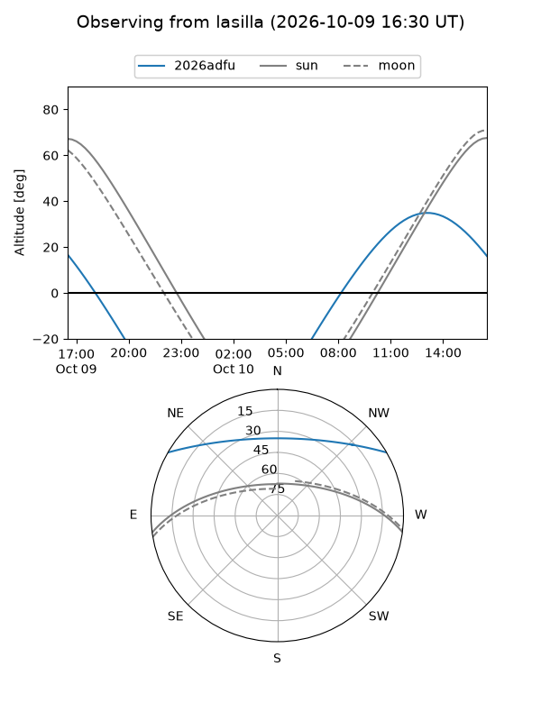
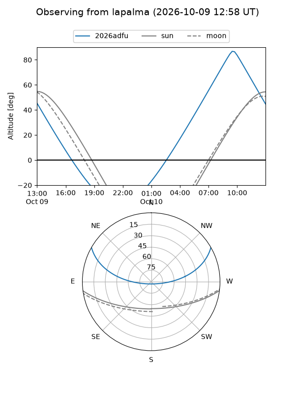
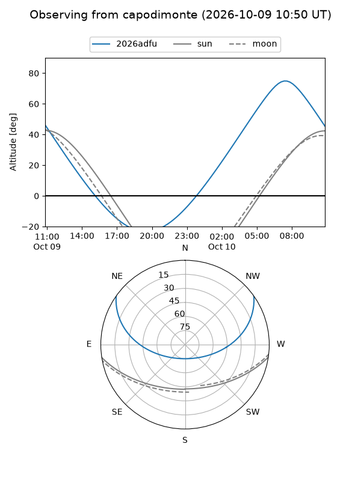
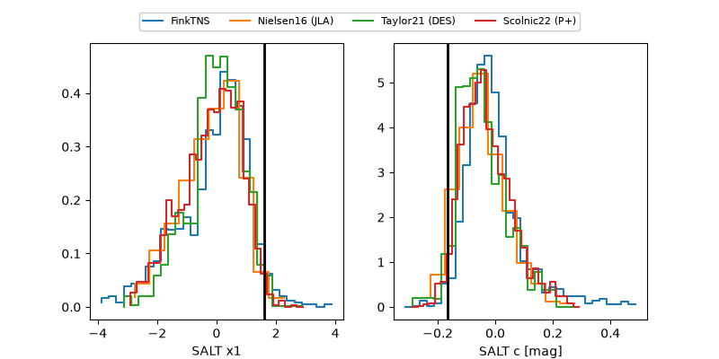

2026adfu
Target 2026adfu at 2026-10-10 14:21
Aliases and brokers:
FINK-ZTF: ztf.fink-portal.org/ZTF26abwybxk
Lasair-ZTF: lasair-ztf.lsst.ac.uk/objects/ZTF26abwybxk
ALeRCE-ZTF: alerce.online/object/ZTF26abwybxk
YSE-PZ: ziggy.ucolick.org/yse/transient_detail/2026adfu
TNS name: wis-tns.org/object/2026adfu
Direct TNS query: direct search
alt names
ZTF26abwybxk (ztf,fink_ztf)
2026adfu (tns,yse)
Coordinates:
equatorial (ra, dec) = 144.3881,+25.94834
equatorial (HMS+DMS) = 09:37:33.14,+25:56:54.04
galactic (l, b) = (203.0235,+46.89418)
Flags:
peak dt: +13.8
Photometry:
last atlasc=18.80, ztfr=18.92
1 atlasc, 4 ztfr detections
Lightcurve

Visibility



Additional plots
